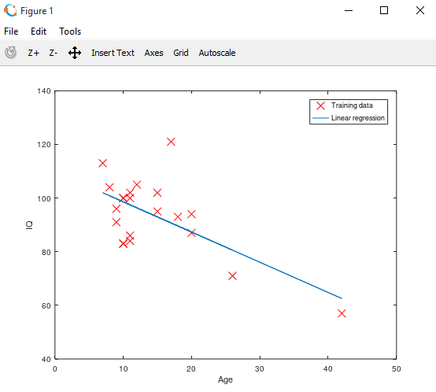
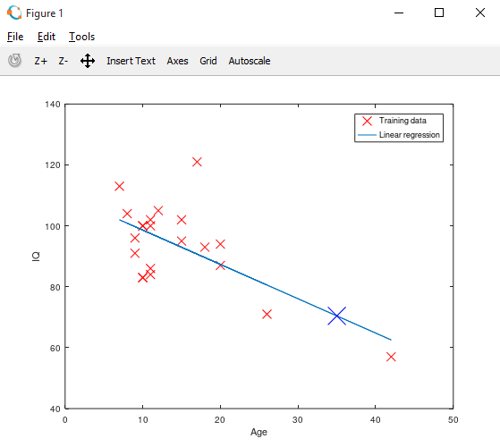

HOME BLOG EBOOKS ABOUT CONTACT SHOP
Now let’s to implement the same example from last section using the normal equation method. If you remember, in normal equation method we are directly calculating the values of theta corresponding to minimum of the cost function.
Download the data set: agevsiq.
>> data = load('agevsiq.txt'); #load the data text file
>> x = data(:,1); #store the age values as matrix x
y = data(:,2); #store the age values as matrix x
>> plot(x,y,'rx','MarkerSize',10); #mark the values on a graph with X's
>> hold on;
>> xlabel('Age');
>> ylabel('IQ');
>>m = length(X); #store the no of training examples as m
>X = [ones(m, 1) x]; #matrix X includes the x0 values
>> theta = (pinv(X'*X))*X'*y #Calculate the theta value directly
theta =
109.8738
-1.1270
>> plot(X(:,2), X*theta, '-') #plot of the predicted hypothesis function
>> legend('Training data', 'Linear regression')

>> predict = [1, 35] *theta #Predicting the IQ of a 35 year old person
predict =
predict = 70.429
>> hold on;
>> plot(35,predict, 'bx','MarkerSize',20); #Mark the predicted IQ on the graph

Now if you compare the results from the gradient descent method & the normal equation method, both are almost the same. From gradient descent method, we obtained the theta values as 106.10373, -0.92372. Whereas from normal equation method, the theta values were 109.8738, -1.1270. Perhaps if we increased the no of iterations or slightly increased the learning rate, we would have obtained a bit more precise result with the gradient descent method. And this difference in the obtained hypothesis function from both methods shows when we predicted the IQ of a 35 year old person. It was 73.774 using gradient descent method & here it is 70.429